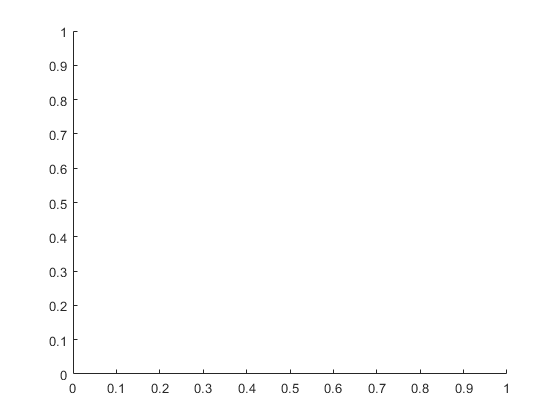
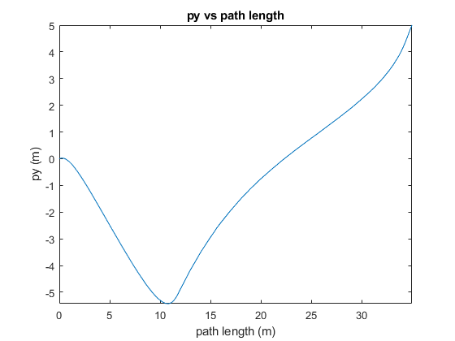
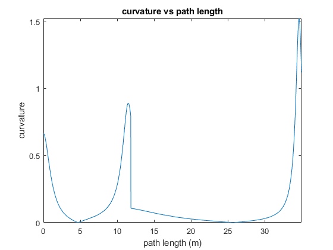
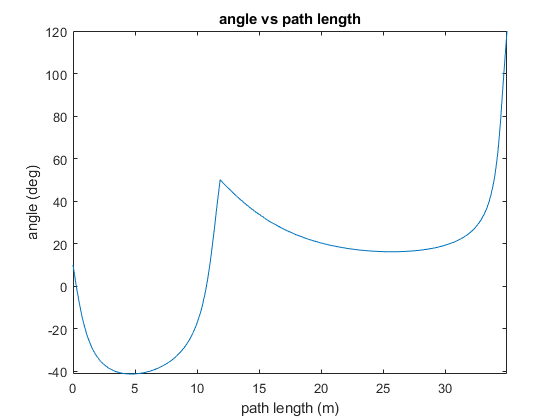

Contents
- Problem Data
- Initial Guess
- Optimization
- Generating datd and plotting the reults
- Function to calculate total arc length of the trajectory
- These functions returns px and py of the trajectories of given coefficitnts
- Function to calculate curvature at given t
- Cost function for optimization
- Defining constraing for optimization
clear variables; close all; clc
Problem Data
p1 = [0 0]'; p2 = [10 -5]'; p3 = [30, 5]'; X1 = 10*pi/180; X2 = 50*pi/180; X3 = 120*pi/180; p = [p1, p2, p3]; X = [X1, X2, X3]; size_p = size(p);
Initial Guess
Fitting a 3rd degree polynomil curve between the 2 points and stiching it. Varying x constantly with t and calculating the initial guesses for the coefficitnes.
x_init = []; for i = 1:(size_p(2)-1) A_init = [1 p(1,i) p(1,i)^2 p(1,i)^3; 1 p(1,i+1) p(1,i+1)^2 p(1,i+1)^3; 0 1 2*p(1,i) 3*p(1,i)^2; 0 1 2*p(1,i+1) 3*p(1,i+1)^2]; b_init = [p(2,i) p(2,i+1) tan(X(i)) tan(X(i+1))]'; a = pinv(A_init)*b_init; ax0 = p(1,i); ax1 = p(1,i+1) - p(1,i); ay0 = a(1) + a(2)*ax0 + a(3)*ax0^2 + a(4)*ax0^3; ay1 = a(2)*ax1 + 2*a(3)*ax0*ax1 + 3*a(4)*ax0^2*ax1; ay2 = a(3)*ax1^2 + 3*a(4)*ax0*ax1^2; ay3 = a(4)*ax1^3; x_init(:,i) = [ax0; ax1; 0; 0; 0; ay0; ay1; ay2; ay3; 0]; end
Optimization
solver_options = optimoptions('fmincon', 'MaxIterations', 1E4, ... 'OptimalityTolerance', 1E-6, 'ConstraintTolerance', 1E-6, ... 'MaxFunctionEvaluations', 1E6, 'Display', 'iter'); % Optimizing the trajectory using fmincon x_opt = []; for i = 1:(size_p(2)-1) [x_opt(:,i), fval, exit_flag, solver_output] = .... fmincon(@(x) my_cost(x, 100, 1), ... x_init(:,1), [], [], [], [], [], [], ... % <--- The two zeros here are lower bounds for the decision variables @(x) my_constraints(x, p(:,i), p(:,i+1), X(i), X(i+1), 8), ... solver_options); end
Generating datd and plotting the reults
path_lenght1 = arc_length(x_opt, 1000, 2); l = @(t) arc_length(x_opt, 1000, t); kappa = @(t) curvature(x_opt, t); xt = @(t) traj_x(x_opt,t); yt = @(t) traj_y(x_opt,t); angle = @(t) traj_angle(x_opt, t); velocity = @(t) traj_vel(x_opt, t); figure fplot(xt, yt, [0,2]) title('py vs px') xlabel 'px (m)'; ylabel 'py (m)'; hold on plot(p1(1), p1(2), '.', 'markersize', 20); plot(p2(1), p2(2), '.', 'markersize', 20); plot(p3(1), p3(2), '.', 'markersize', 20); figure fplot(l, xt, [0,2]) title('px vs path length') xlabel 'path length (m)'; ylabel 'px (m)'; figure fplot(l, yt, [0,2]) title('py vs path length') xlabel 'path length (m)'; ylabel 'py (m)'; figure fplot(l, kappa, [0,2]) title('curvature vs path length') xlabel 'path length (m)'; ylabel 'curvature'; figure fplot(l, angle, [0,2]) title('angle vs path length') xlabel 'path length (m)'; ylabel 'angle (deg)';
Function to calculate total arc length of the trajectory
function total_length = arc_length(x, M, t_end) dt = 1/M; length = 0; size_x = size(x); for i = 1 : size_x(2) for j = 0 : M t = j*dt; if t+i-1 >= t_end break; end dpx = x(2,i) + 2*x(3,i)*t + 3*x(4,i)*t^2 + 4*x(5,i)*t^3; dpy = x(7,i) + 2*x(8,i)*t + 3*x(9,i)*t^2 + 4*x(10,i)*t^3; d_length = sqrt(dpx^2 + dpy^2); if j == 0 || j == M length = length + 0.5*dt*d_length; else length = length + dt*d_length; end end if t+i-1 >= t_end break; end end total_length = length; end
Warning: Function behaves unexpectedly on array inputs. To improve performance, properly vectorize your function to return an output with the same size and shape as the input arguments.
Warning: Function behaves unexpectedly on array inputs. To improve performance, properly vectorize your function to return an output with the same size and shape as the input arguments. Warning: Function behaves unexpectedly on array inputs. To improve performance, properly vectorize your function to return an output with the same size and shape as the input arguments. Warning: Function behaves unexpectedly on array inputs. To improve performance, properly vectorize your function to return an output with the same size and shape as the input arguments.
These functions returns px and py of the trajectories of given coefficitnts
function px = traj_x(x, t) size_x = size(x); t=min(max(t,0),size_x(2)); i = t - mod(t,1); i = min(i, size_x(2) - 1); t = t-i; px = x(1,i+1) + x(2,i+1)*t + x(3,i+1)*t^2 + x(4,i+1)*t^3 + x(5,i+1)*t^4; end function py = traj_y(x, t) size_x = size(x); t=min(max(t,0),size_x(2)); i = t - mod(t,1); i = min(i, size_x(2) - 1); t = t-i; py = x(6,i+1) + x(7,i+1)*t + x(8,i+1)*t^2 + x(9,i+1)*t^3 + x(10,i+1)*t^4; end function X = traj_angle(x, t) size_x = size(x); t=min(max(t,0),size_x(2)); i = t - mod(t,1); i = min(i, size_x(2) - 1); t = t-i; dpx = x(2,i+1) + 2*x(3,i+1)*t + 3*x(4,i+1)*t^2 + 4*x(5,i+1)*t^3; dpy = x(7,i+1) + 2*x(8,i+1)*t + 3*x(9,i+1)*t^2 + 4*x(10,i+1)*t^3; X = atan2(dpy, dpx)*180/pi; end function X = traj_vel(x, t) size_x = size(x); t=min(max(t,0),size_x(2)); i = t - mod(t,1); i = min(i, size_x(2) - 1); t = t-i; dpx = x(2,i+1) + 2*x(3,i+1)*t + 3*x(4,i+1)*t^2 + 4*x(5,i+1)*t^3; dpy = x(7,i+1) + 2*x(8,i+1)*t + 3*x(9,i+1)*t^2 + 4*x(10,i+1)*t^3; X = sqrt(dpy^2 + dpx^2); end
Warning: Function behaves unexpectedly on array inputs. To improve performance, properly vectorize your function to return an output with the same size and shape as the input arguments. Warning: Function behaves unexpectedly on array inputs. To improve performance, properly vectorize your function to return an output with the same size and shape as the input arguments. Warning: Function behaves unexpectedly on array inputs. To improve performance, properly vectorize your function to return an output with the same size and shape as the input arguments.
Function to calculate curvature at given t
function kappa = curvature(x, t) size_x = size(x); t=min(max(t,0),size_x(2)); i = t - mod(t,1); i = min(i, size_x(2) - 1); t = t-i; dpx = x(2,i+1) + 2*x(3,i+1)*t + 3*x(4,i+1)*t^2 + 4*x(5,i+1)*t^3; dpy = x(7,i+1) + 2*x(8,i+1)*t + 3*x(9,i+1)*t^2 + 4*x(10,i+1)*t^3; ddpx = 2*x(3,i+1) + 6*x(4,i+1)*t + 12*x(5,i+1)*t^2; ddpy = 2*x(8,i+1) + 6*x(9,i+1)*t + 12*x(10,i+1)*t^2; dp = [dpx; dpy; 0]; ddp = [ddpx; ddpy; 0]; temp1 = norm(cross(dp, ddp)); temp2 = norm(dp); kappa = temp1/temp2^3; end
Warning: Function behaves unexpectedly on array inputs. To improve performance, properly vectorize your function to return an output with the same size and shape as the input arguments. Warning: Function behaves unexpectedly on array inputs. To improve performance, properly vectorize your function to return an output with the same size and shape as the input arguments. Warning: Function behaves unexpectedly on array inputs. To improve performance, properly vectorize your function to return an output with the same size and shape as the input arguments. 
Cost function for optimization
function f_ = my_cost(x, M, u) dt = 1 / M; H_tilda = zeros(10,10); for i = 0 : M t = i*dt; H_temp_1 = [0 1 2*t 3*t^2 4*t^3 0 0 0 0 0]; H_temp_2 = [0 0 0 0 0 0 1 2*t 3*t^2 4*t^3]; H_temp_3 = [0 0 2 6*t 12*t^2 0 0 0 0 0]; H_temp_4 = [0 0 0 0 0 0 0 2 6*t 12*t^2]; H_i = (H_temp_1'*H_temp_1 + H_temp_2'*H_temp_2) ... + u*(H_temp_3'*H_temp_3 + H_temp_4'*H_temp_4); if i == 0 || i == M H_tilda = H_tilda + 0.5*dt*H_i; else H_tilda = H_tilda + dt*H_i; end end f_ = x'*H_tilda*x; end
Defining constraing for optimization
function [g_, h_] = my_constraints(x, p0, p1, X0, X1, v) M = 1000; % Heading constrains at the end points of the trajectory A_g = [0 0 0 0 0 0 -sign(sin(X0)) 0 0 0; 0 -sign(cos(X0)) 0 0 0 0 0 0 0 0; 0 0 0 0 0 0 -sign(sin(X1)) -2*sign(sin(X1)) -3*sign(sin(X1)) -4*sign(sin(X1)); 0 -sign(cos(X1)) -2*sign(cos(X1)) -3*sign(cos(X1)) -4*sign(cos(X1)) 0 0 0 0 0; zeros(M-1,10)]; % Veloity constrain for the trajectory dt = 1/M; vel = zeros(M+3,1); for i = 1 : M-1 t = i*dt; dpx = x(2) + 2*x(3)*t + 3*x(4)*t^2 + 4*x(5)*t^3; dpy = x(7) + 2*x(8)*t + 3*x(9)*t^2 + 4*x(10)*t^3; vel(i+4,1) = -sqrt(dpx^2 + dpy^2); end g_ = A_g*x + vel + [zeros(4,1);v*ones(M-1,1)]; % Equality constrains A = [1 0 0 0 0 0 0 0 0 0; 0 0 0 0 0 1 0 0 0 0; 1 1 1 1 1 0 0 0 0 0; 0 0 0 0 0 1 1 1 1 1; 0 tan(X0) 0 0 0 0 -1 0 0 0; 0 tan(X1) 2*tan(X1) 3*tan(X1) 4*tan(X1) 0 -1 -2 -3 -4]; b = [p0(1) p0(2) p1(1) p1(2) 0 0]'; h_ = A*x - b; end
First-order Norm of
Iter F-count f(x) Feasibility optimality step
0 11 1.947437e+03 1.464e-12 2.581e+01
1 22 1.314010e+03 1.094e-07 1.407e+02 1.004e+01
2 33 1.300701e+03 3.335e-08 4.041e+01 1.847e+00
3 44 1.299844e+03 2.545e-08 2.727e+01 2.813e-01
4 55 1.298987e+03 2.251e-08 2.590e+01 2.584e-01
5 66 1.298853e+03 2.223e-08 2.561e+01 5.923e-02
6 77 1.297731e+03 4.774e-08 2.159e+01 4.337e-01
7 88 1.297667e+03 4.708e-08 2.131e+01 3.567e-02
8 99 1.296608e+03 5.157e-08 1.893e+01 4.678e-01
9 110 1.296571e+03 5.187e-08 1.856e+01 2.724e-02
10 121 1.295718e+03 2.503e-08 1.628e+01 4.194e-01
11 132 1.295693e+03 2.607e-08 1.584e+01 2.599e-02
12 143 1.295050e+03 1.771e-08 1.366e+01 3.613e-01
13 154 1.295032e+03 1.604e-08 1.313e+01 2.824e-02
14 165 1.294581e+03 2.135e-08 1.102e+01 3.011e-01
15 176 1.294568e+03 2.151e-08 1.038e+01 2.966e-02
16 187 1.294273e+03 4.858e-08 8.367e+00 2.469e-01
17 198 1.294263e+03 4.576e-08 7.578e+00 3.236e-02
18 209 1.294087e+03 1.334e-08 5.726e+00 2.231e-01
19 220 1.294077e+03 1.174e-08 4.734e+00 6.572e-02
20 231 1.293997e+03 5.516e-09 3.007e+00 2.202e-01
21 243 1.293999e+03 5.344e-09 2.412e+00 4.809e-02
22 254 1.293992e+03 1.927e-09 1.133e+00 4.317e-02
23 265 1.293988e+03 1.882e-09 1.442e-01 1.520e-01
24 276 1.293986e+03 1.297e-09 5.795e-02 1.496e-02
25 287 1.293987e+03 4.927e-11 1.344e-03 1.537e-03
26 298 1.293986e+03 6.283e-10 4.124e-03 7.169e-03
27 309 1.293986e+03 1.038e-10 1.645e-04 7.336e-04
Feasible point with lower objective function value found.
Local minimum found that satisfies the constraints.
Optimization completed because the objective function is non-decreasing in
feasible directions, to within the value of the optimality tolerance,
and constraints are satisfied to within the value of the constraint tolerance.
First-order Norm of
Iter F-count f(x) Feasibility optimality step
0 11 1.947437e+03 2.924e+01 1.461e+02
1 22 1.269638e+03 1.502e+01 3.734e+02 2.303e+01
2 33 1.274646e+03 1.495e+01 2.320e+02 1.008e-01
3 45 1.274903e+03 1.495e+01 2.306e+02 2.591e-03
4 56 1.293738e+03 1.488e+01 2.197e+02 2.040e-01
5 68 3.450890e+03 8.430e+00 5.630e+02 1.629e+01
6 79 4.134588e+03 3.520e-07 7.853e+02 1.802e+01
7 90 3.889349e+03 9.048e-07 2.650e+02 5.152e+00
8 101 3.881217e+03 7.986e-07 1.960e+02 5.999e-01
9 112 3.806276e+03 1.190e-06 1.853e+02 2.071e+01
10 123 3.796802e+03 1.053e-07 1.626e+02 3.174e+00
11 134 3.778509e+03 1.929e-07 1.471e+02 5.645e+00
12 145 3.762079e+03 2.069e-07 1.210e+02 3.004e+00
13 156 3.754535e+03 8.369e-08 1.094e+02 9.490e-01
14 167 3.748914e+03 6.747e-08 1.037e+02 7.742e-01
15 178 3.742244e+03 5.554e-08 9.784e+01 1.251e+00
16 189 3.735169e+03 4.931e-08 8.891e+01 1.776e+00
17 200 3.730888e+03 1.196e-07 8.330e+01 2.997e+00
18 211 3.726477e+03 4.378e-08 2.030e+01 1.531e+00
19 222 3.725704e+03 4.443e-08 1.108e+01 4.934e-01
20 233 3.725050e+03 4.324e-08 8.761e+00 7.619e-01
21 244 3.724843e+03 5.783e-08 5.593e+00 2.573e-01
22 255 3.724825e+03 5.189e-08 4.273e+00 3.806e-02
23 266 3.724544e+03 5.869e-08 4.305e+00 8.152e-01
24 277 3.724533e+03 4.959e-08 6.621e-01 4.356e-02
25 288 3.724533e+03 7.803e-10 4.017e-02 1.003e-02
26 299 3.724533e+03 5.156e-10 2.373e-02 1.392e-02
27 310 3.724533e+03 5.385e-11 1.055e-02 6.549e-03
28 321 3.724533e+03 5.496e-10 2.348e-03 4.576e-03
29 332 3.724533e+03 6.985e-12 8.443e-05 1.606e-03
Local minimum found that satisfies the constraints.
Optimization completed because the objective function is non-decreasing in
feasible directions, to within the value of the optimality tolerance,
and constraints are satisfied to within the value of the constraint tolerance.